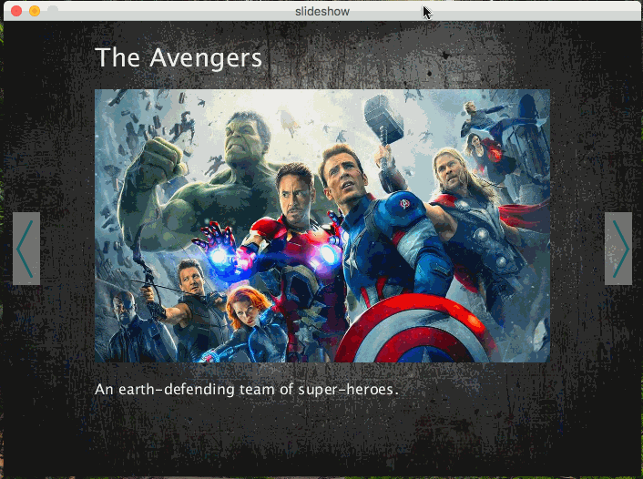
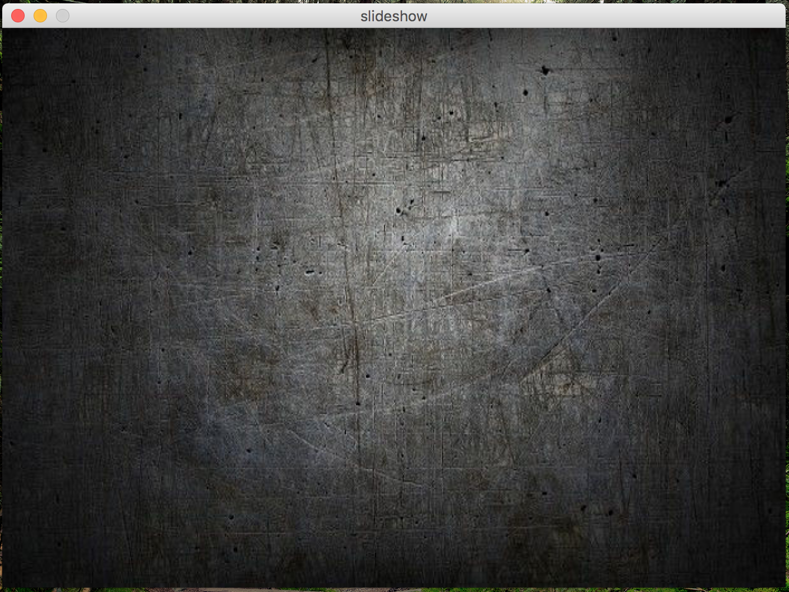
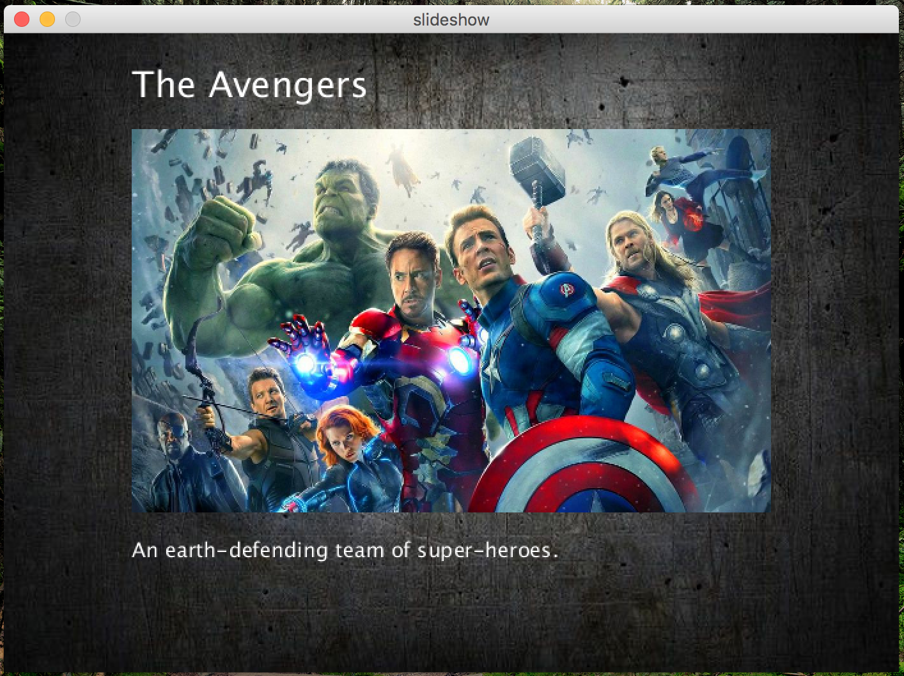
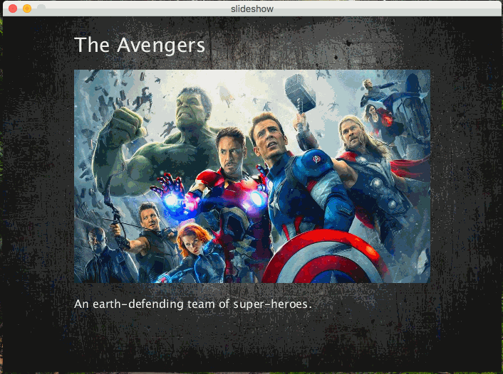
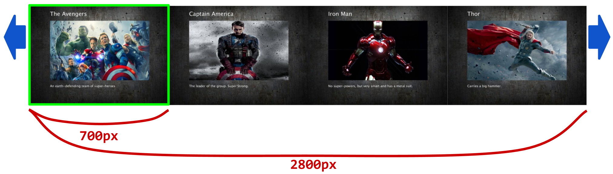

In this assignment, you’ll create a slide-show application based on a topic of your choosing. One example of such a slide-show is shown below:

Notice a few things that you must conform to when you write your program:
The only code you are allowed to put into draw() are calls to functions that you have written.
You may not draw any shapes, respond to mouse clicks, have if-statements or for loops, etc. within draw().
Instead, put your code into at least three separate, well-named functions.
As with the last assignment, this one might seem complex. If you break the problem down into smaller “chunks” it becomes much more manageable. I recommend you use the following strategy to complete:
First, choose a theme that has at least 4 distinct sub-topics that you can create a slide about. Then, choose your 5 images (1 for the background, and 4 for the slides) and put them in the same directory as your program.
Next, create your canvas and get the background image displayed and properly scaling across the screen.

Next, get your first slide showing up. Don’t worry about changing slides for now, just make sure that the image and text show up in the right location and with a reasonable size, like so:

Now, use the keyReleased() function to handle the 'z' and 'm' button clicks, to get the slides to change.

But how should the movement work? One possibility is to do the following. In actuality, you should draw all of the slides, side-by-side. For example:

This will produce 2800x500 pixels worth of drawing. However, your canvas will only display one of the slides at a time When the user presses z/m or click the left/right buttons, you can move the entore drawing left or right 700 pixels (as long as there are more slides to show in the left or right direction).
Lastly, add in the left/right buttons. Make sure that the buttons are click-able to change the slide. When the mouse is clicked outside of a button, nothing should happen. If you are having trouble getting the buttons to work, try referring back to section 8.
All of your programming should be well-formatted and easy for the graders to read and comprehend. You should follow the style guidelines that we have discussed in class. Each program file should have a header comment at the top that has roughly the following format:
/*
* Author: Student Name
* Description:
* A short description of what this program does!
*/
If any part of your scripts are particularly complex, you should put documentation comments above those lines of code.
Name your program netid_slideshow.pde (where netid is your UA username).
This is due on 4/13/2018 at 5:00pm. Turn it in to the D2L dropbox before the due date/time.
Do not submit all of the files separately. The stepts to turn in are as follows:
slideshow.pde) and all image files into a directory named slideshow.slideshow directory into one zip file named slideshow.zip.
There are instructions on the internet for zipping folders on a mac and zipping folders on Windows.